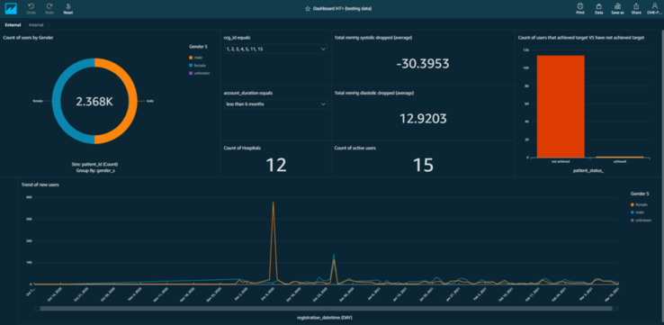
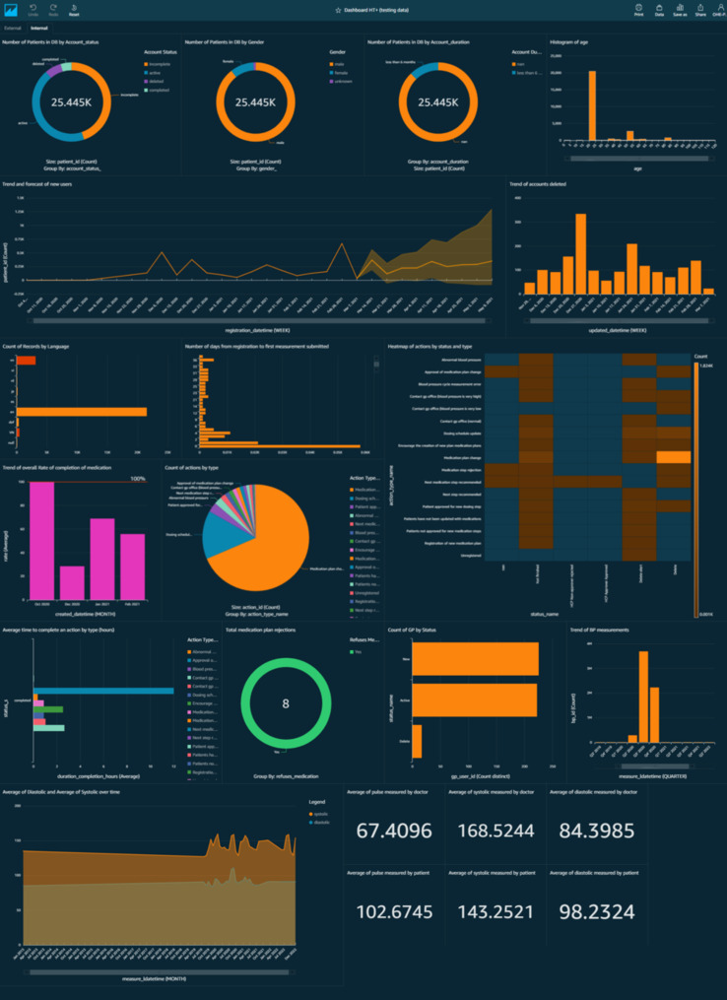

Dashboard Hypertension Plus
Mar 2021 ~ OMRON Healthcare Europe
Length: 1mo (at 1.0 FTE)  
Software: Amazon QuickSight
Programming language: SQL
Data: Hypertension Plus database containing details about the users of the app,
their blood pressure measurements and medication plan history
Problem description:
Hypertension Plus is an app meant to reduce the friction between patients with hypertension
and their physicians with the help of blood pressure home monitoring. In order to measure
the performance of the app and gather actionable insights, a dashboard depicting critical
metrics was designed
Approach & Results:
After engaging in conversations with several managers to decide on the performance indicators
wanted, the data was manipulated. This phase included querying the data using SQL, joining
multiple tables, mapping variable codes to names (e.g. 1 to male and 2 to female), and
creating calculated fields, such as the age of the patients based on their date of birth
or the difference between their first and last blood pressure measurement. Finally,
the charts were represented and displayed in two sheets based on their usage purpose,
namely internal and external, reaching a 100% usage rate among stakeholders at the end of
my stage
DISCLAIMER: To avoid the regulations associated with
sharing personal information, the following screenshots illustrate the dashboard with data
that was randomly generated for testing purposes. Hence, as no real data was used, the
insights should NOT be considered. Instead, the pictures aim to show the type of
visualizations designed and their potential of leading to actionable insights.